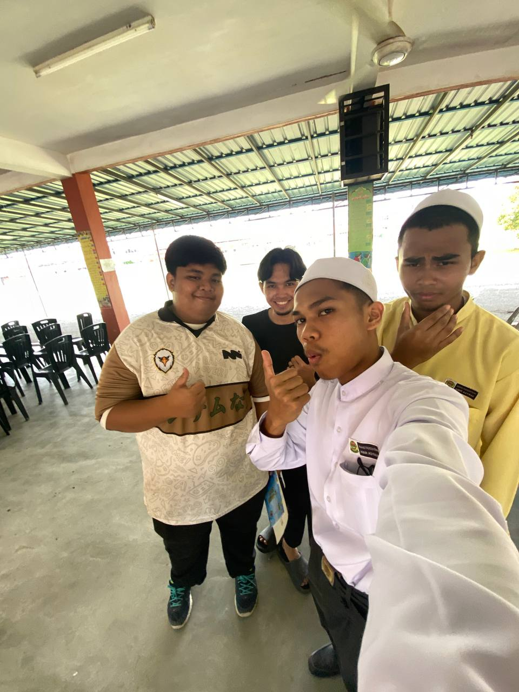
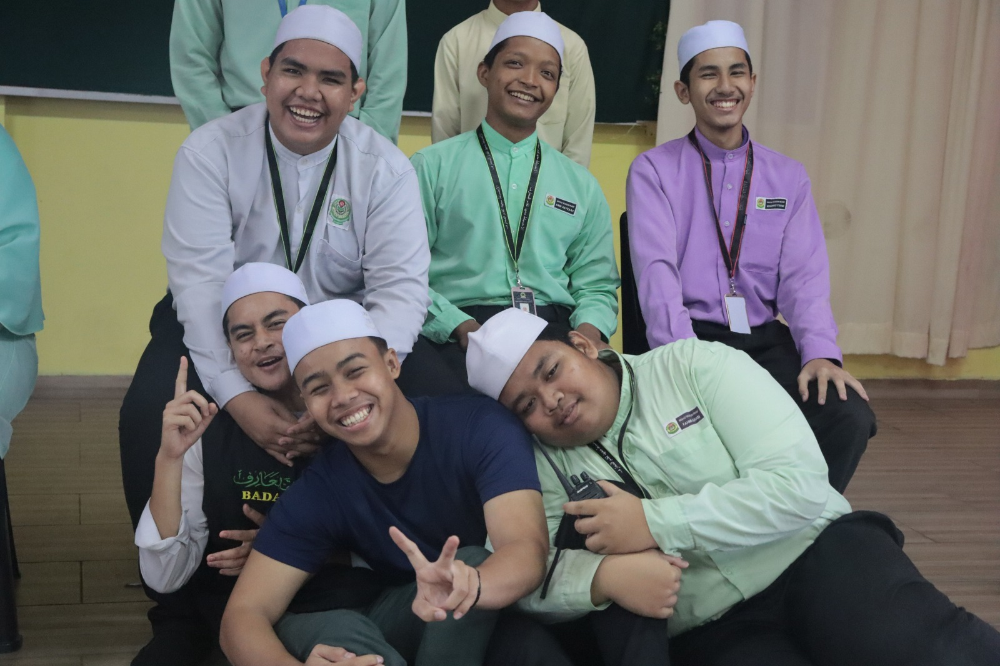
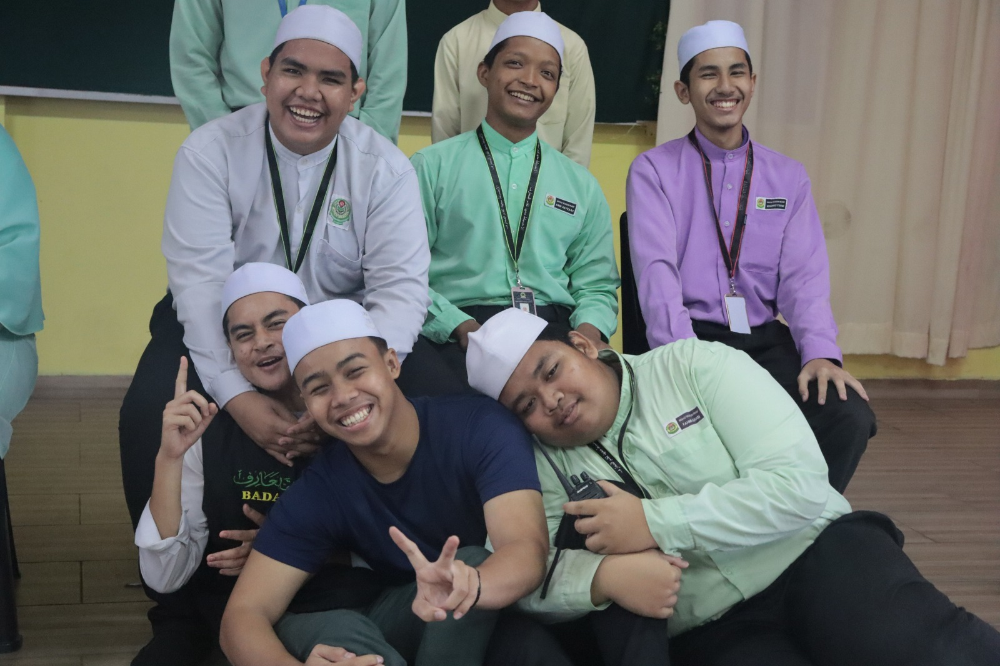
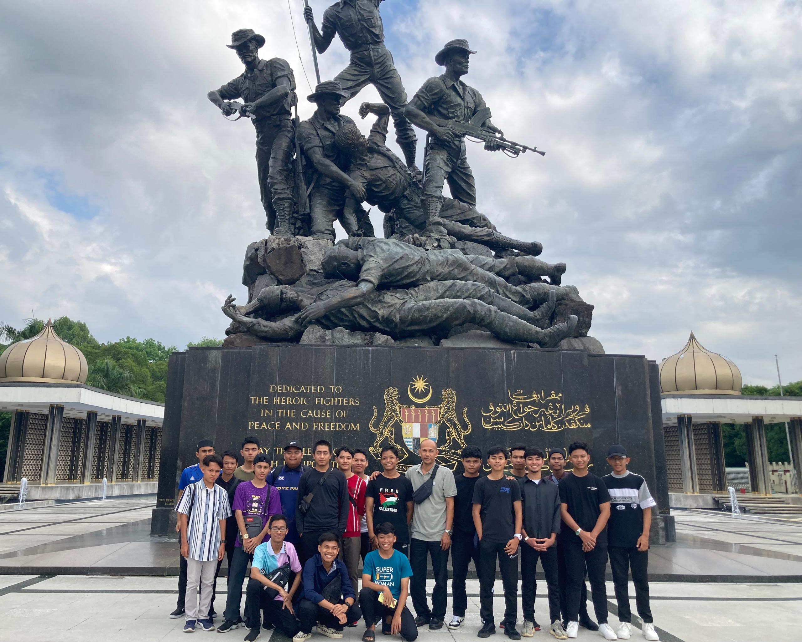

Education & Achievement
HighSchool
After completing primary school, I continued my secondary education at Maahad Taqaddum Maarif, where I studied from Form One to Form Five. Here, I hold several positions, including head of the photography unit and secretary of the disciplinary unit. This chapter of my journey shaped my discipline and character, and it concluded with me achieving 2As and 1B in the SPM examination.

 

